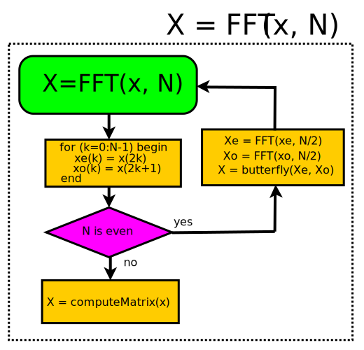
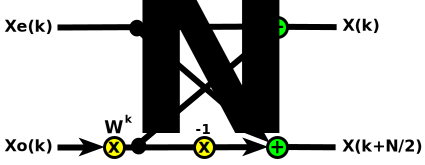
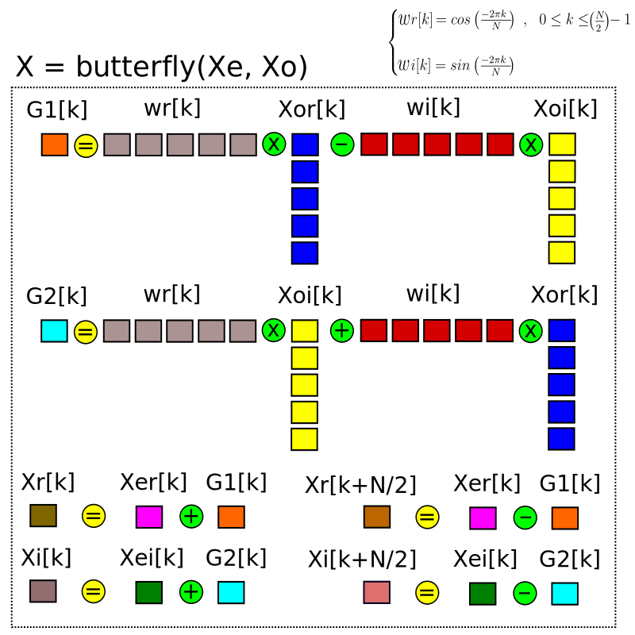
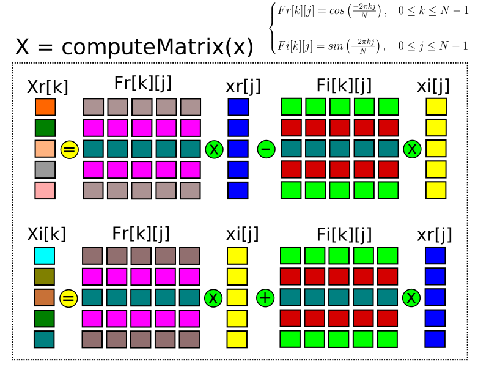
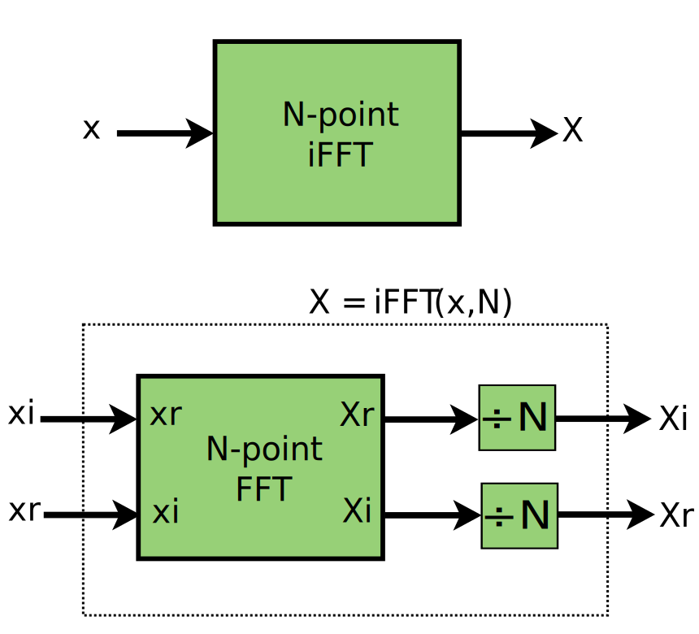
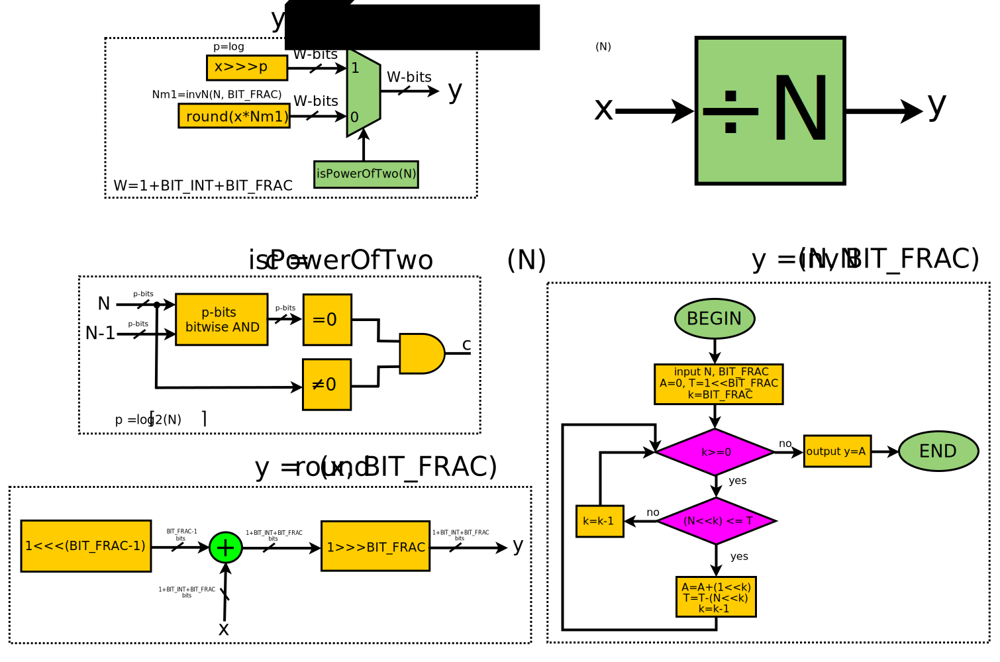

The Fast Fourier Transform is one of the most important operations in Digital Signal Processing and has many applications, for example, in the analysis of communication signals or to perform the Discrete Cosine Transform widely used in audio and image data compression algorithms.
Let \(x[n]\) be a series of complex signals, for \(0\leq n\leq N-1\) and \(X[k]\) the Discrete Fourier Transform of \(x[n]\), for \(0\leq k\leq N-1\). The frequency domain signals \(X[k]\) can be obtained according to equation \(\ref{eq:fft1}\) or in its matrix form as can be seen in equation \(\ref{eq:fft2}\), where \(W_N^{kn} = e^{\frac{-2i\pi kn}{N}}\).
$$\begin{equation} X[k] = \sum_{n=0}^{N-1}x[n]W_N^{kn} \end{equation}\tag{1}\label{eq:fft1}$$ $$\begin{equation}\begin{bmatrix} X[0]\\ \\ \vdots\\ \\ X[N-1] \end{bmatrix} = \begin{bmatrix} W_N^{0\times0} &\dots & W_N^{0\times(N-1)}\\ \\ \vdots &\ddots &\vdots\\ \\ W_N^{(N-1)\times0} & \dots & W_N^{(N-1)^2} \end{bmatrix}\times \begin{bmatrix} x[0]\\ \\ \vdots\\ \\ x[N-1] \end{bmatrix} \end{equation}\tag{2}\label{eq:fft2}$$The computation of \(X[k]\) has complexity of \(O(n^2)\). However, the expression of the equation \(\ref{eq:fft1}\) may be split in two terms according to equation \(\ref{eq:fft3}\).
$$\begin{equation}X[k] = \sum_{n=0}^{N-1}x[2n]W_N^{2nk}+\sum_{n=0}^{N-1}x[2n+1]W_N^{(2n+1)k} \end{equation}\tag{3}\label{eq:fft3}$$Note that applying the properties \(W_N^{2kn} = W_{N/2}^{kn}\) and \(W_N^{k+N/2} = -W_N^{kn}\) into equation \(\ref{eq:fft3}\), equation \(\ref{eq:fft4}\) is obtained, where \(Xe[k] = \sum\limits_{n=0}^{(N/2)-1}x[2n]W_{N/2}^{nk}\) and \(Xo[k] = \sum\limits_{n=0}^{(N/2)-1}x[2n+1]W_{N/2}^{nk}\).
$$\left\{\begin{matrix} X[k] = Xe[k]+W_N^k Xo[k]\\ \\ X[k+N/2] = Xe[k]-W_N^k Xo[k] \end{matrix}\right.\tag{4}\label{eq:fft4}$$According to equation \(\ref{eq:fft4}\), if N is a power of 2, the computation of \(X[k]\) has complexity of \(O(N\times log_2(N))\).
To retrieve the signals \(x[n]\) the inverse transform is applied according to the equation \(\ref{eq:fft5}\).
$$\begin{equation} x[n] = \frac{1}{N}\sum_{k=0}^{N-1}X[k]W_N^{-kn} \end{equation}\tag{5}\label{eq:fft5}$$A very simple algorithm to compute the FFT can be defined taking advantage of the recursive nature of the FFT, as can be seen in Figure 1.  Figure 1: The FFT recursive algorithm
{kind=link}
- if the size \(N\) of the FFT is even then call two FFT of order \(N/2\), one to compute the Fourier Transform of the signals with even index (\(x[2n]\)) and other to compute the signals with odd index (\(x[2n+1]\)). The Fourier Transform will be scaled with the twiddle factor \(W_N^k\).  Figure 2: N-point FFT split in two (N/2)-point FFT
- if \(N\) is odd then the FFT will be slowly calculated using the Fourier matrix of equation \(\ref{eq:fft2}\).
{kind=link}
If the length N of the FFT is of the form \(N = m\times 2^p\) the the complexity of the algorithm of Figure 1 will be \(O(m^2)\times O(p\times log_2(p))\).
A geometric interpretation of the complexity of the FFT can be seen as follows:
- when \(N\) is even the algorithm will perform the butterfly computation wich requires N floating-point operations, as can be seen in Figure 2, and the butterfly will be called recursively \(log_2(N)\) times.  Figure 2: The FFT butterfly
- when \(N\) is odd then Fourier matrix computation requires \(N^2\) floating-point operations, as can be seen in Figure 3.  Figure 3: The Fourier Matrix
{kind=link}
{kind=link}
The inverse transform may be obtained using the forward transform according to Figure 4.
 Figure 4: The inverse FFT{kind=link}
The block to divide by \(N\) can be computed in hardware according to the algorithm of Figure 5.
 Figure 5: The divbyN block{kind=link}
The forward and inverse FFT algorithm was implemented using Octave (compatible with MATLAB) and the codes can be seen below:
function [Yr, Yi] = butterfly(Xer, Xei, Xor, Xoi, N) for k=0:N/2-1 wr(k+1) = cos(-2*pi*k/N); wi(k+1) = sin(-2*pi*k/N); end for k=1:N/2 G1(k) = wr(k)*Xor(k)-wi(k)*Xoi(k); G2(k) = wr(k)*Xoi(k)+wi(k)*Xor(k); end for k=1:N/2 Yr(k) = Xer(k)+G1(k); Yr(k+N/2) = Xer(k)-G1(k); Yi(k) = Xei(k)+G2(k); Yi(k+N/2) = Xei(k)-G2(k); end end
function [Yr, Yi] = computeMatrix(xr, xi) N = length(xr); for k=0:N-1 for j=0:N-1 Fr(k+1,j+1) = cos(-2*pi*k*j/N); Fi(k+1,j+1) = sin(-2*pi*k*j/N); end end Yr = zeros(N,1); Yi = zeros(N,1); for k=0:N-1 for j=0:N-1 Yr(k+1) = Yr(k+1)+Fr(k+1,j+1)*xr(j+1)-Fi(k+1,j+1)*xi(j+1); Yi(k+1) = Yi(k+1)+Fr(k+1,j+1)*xi(j+1)+Fi(k+1,j+1)*xr(j+1); end end end
function [Yr, Yi] = FFT(xr, xi) N = length(xr); if rem(N,2) == 0 for k=0:N/2-1 xe_r(k+(1))=xr(2*k+(1)); xo_r(k+(1))=xr(2*k+1+(1)); xe_i(k+(1))=xi(2*k+(1)); xo_i(k+(1))=xi(2*k+1+(1)); end [Xer, Xei] = FFT(xe_r, xe_i); [Xor, Xoi] = FFT(xo_r, xo_i); [Yr, Yi] = butterfly(Xer, Xei, Xor, Xoi, N); else [Yr, Yi] = computeMatrix(xr, xi); end end
function [Yr, Yi] = iFFT(xr, xi) N = length(xr); [Xi, Xr] = FFT(xi, xr); Yr = Xr/N; Yi = Xi/N; end
As many programming languages, SystemVerilog (which is a Hardware Description Language) supports recursion (since Verilog-2001). The forward and inverse FFT parameterized by the length \(N\) of the signals (in fixed-point format) were implemented using SystemVerilog and the codes can be seen below. Note that the system functions $cos() and $sin() in the butterly and computeMatrix modules are computing known values during elaboration time and therefore the codes are describing synthesizable hardware.
module butterfly #(parameter N=1, parameter W=1) (input logic signed [W+N/2-1:0] Xe[N/2][1:0], input logic signed [W+N/2-1:0] Xo[N/2][1:0], output logic signed [W+N-1:0] X[N][1:0]); logic signed [W+N/2:0] G[N][1:0]; localparam theta = -2*$acos(-1)/N; always_comb for(int k=0; k<N/2; k++)begin // Nodes on the butterfly G[k][0] = ($cos(theta*k)*Xo[k][0])-($sin(theta*k)*Xo[k][1]); G[k][1] = ($cos(theta*k)*Xo[k][1])+($sin(theta*k)*Xo[k][0]); // Butterfly computation X[k][0] = Xe[k][0]+G[k][0]; X[k][1] = Xe[k][1]+G[k][1]; X[k+N/2][0] = Xe[k][0]-G[k][0]; X[k+N/2][1] = Xe[k][1]-G[k][1]; end endmodule: butterfly
module computeMatrix #(parameter N=1, parameter W=1) (input logic signed [W:0] x[N][1:0], output logic signed [W+N-1:0] X[N][1:0]); localparam theta = -2*$acos(-1)/N; // Computation of the Fourier matrix always_comb for(int k=0; k<N; k++)begin X[k][1:0] = {0,0}; for(int j=0; j<N; j++)begin X[k][0] = X[k][0]+($cos(theta*k*j)*x[j][0])-($sin(theta*k*j)*x[j][1]); X[k][1] = X[k][1]+($cos(theta*k*j)*x[j][1])+($sin(theta*k*j)*x[j][0]); end end endmodule: computeMatrix
module invN #(parameter N=1, parameter W=1, parameter BIT_FRAC=1) (output logic signed [W:0] y); logic [W:0] A, T; always_comb begin A = 0; T=1<<BIT_FRAC; for(int k=BIT_FRAC; k>=0; k--) if(N<<k <= T)begin A = A+(1<<k); T = T-(N<<k); end y = A; end endmodule: invN
`include "invN.sv" module divbyN #(parameter N=1, parameter W=1) (input logic signed [W:0] x[N][1:0], output logic signed [W:0] y[N][1:0]); logic signed [W:0] inv_N; invN #(.N(N), .W(W), .BIT_FRAC(BIT_FRAC)) m_invN(.y(inv_N)); int p = $clog2(N); localparam c = isPowerOfTwo(N); if(c) begin always_comb for(int k=0; k<N; k++)begin y[k][0] = x[k][0]>>>p; y[k][1] = x[k][1]>>>p;; end end else begin always_comb for(int k=0; k<N; k++)begin y[k][0] = round(x[k][0]*inv_N); y[k][1] = round(x[k][1]*inv_N); end end function logic signed [W:0] round(logic signed [W:0] x); return (x+(1<<<(BIT_FRAC-1)))>>>BIT_FRAC; endfunction: round function logic isPowerOfTwo (input integer N); return (N != 0) && ((N & (N - 1)) == 0); endfunction: isPowerOfTwo endmodule: divbyN
module swap #(parameter N=1, parameter W=1) (input logic signed [W:0] x[N][1:0], output logic signed [W:0] y[N][1:0]); always_comb for(int k=0; k<N; k++)begin y[k][0] = x[k][1]; y[k][1] = x[k][0]; end endmodule: swap
parameter BIT_INT = 16; parameter BIT_FRAC = 16; parameter W = BIT_INT+BIT_FRAC; `include "butterfly.sv" `include "computeMatrix.sv" `include "swap.sv" `include "divbyN.sv" module FFT #(parameter N = 1, parameter W=1) (input logic signed [W:0] x[N][1:0], output logic signed [W+N-1:0] X[N][1:0]); logic signed [W:0] xe[N/2][1:0], xo[N/2][1:0]; logic signed [W+N/2-1:0] Xe[N/2][1:0], Xo[N/2][1:0]; always_comb for(int k=0; k<N/2; k++)begin xe[k][1:0] = x[2*k][1:0]; xo[k][1:0] = x[2*k+1][1:0]; end if(!N[0]) begin butterfly #(.N(N), .W(W)) m_butterfly(.Xe(Xe), .Xo(Xo), .X(X)); FFT #(.N(N/2), .W(W)) FFT_e(.x(xe), .X(Xe)); FFT #(.N(N/2), .W(W)) FFT_o(.x(xo), .X(Xo)); end else computeMatrix #(.N(N), .W(W)) Matrix(.x(x), .X(X)); endmodule: FFT module iFFT #(parameter N = 1) (input logic signed [W:0] x[N][1:0], output logic signed [W+N-1:0] X[N][1:0]); logic signed [W:0] x_in[N][1:0]; logic signed [W+N-1:0] Xa[N][1:0]; logic signed [W+N-1:0] Xb[N][1:0]; swap #(.N(N), .W(W)) swap_in(.x(x), .y(x_in)); FFT #(.N(N), .W(W)) mFFT(.x(x_in), .X(Xa)); swap #(.N(N), .W(W+N-1)) swap_out(.x(Xa), .y(Xb)); divbyN #(.N(N), .W(W+N-1)) divN(.x(Xb), .y(X)); endmodule: iFFT module RecursiveFFT #(parameter N = 1, parameter W = 1, parameter sel = 1) (input logic signed [W:0] x[N][1:0], output logic signed [W+N-1:0] X[N][1:0]); if(!sel) FFT #(.N(N), .W(W)) mFFT(.x(x), .X(X)); else iFFT #(.N(N), .W(W)) miFFT(.x(x), .X(X)); endmodule: RecursiveFFT
`timescale 1ns/1ps `include "FFT.sv" `define SAMPLES 4 parameter N = `SAMPLES; module top(); logic signed [W:0] x[N][1:0]; logic signed [W+N-1:0] X[N][1:0]; // Set sel=0 to compute the forward FFT // Set sel=1 to compute the inverse FFT RecursiveFFT #(.N(N), .W(W), .sel(0)) RFFT(.x(x), .X(X)); initial begin for(int k=0; k<N; k++)begin x[k][0]=k<<<BIT_FRAC; x[k][1]=(N-1-k)<<<BIT_FRAC; end #1 testFFTinput(.x(x), .X(X)); $finish; end localparam K=1<<BIT_FRAC; task testFFTinput(input logic signed [W:0] x[N][1:0], input logic signed [W+N-1:0] X[N][1:0]); for(int k=0; k<N; k++) $display("x[%0d]=%0f+i*(%0f), X[%0d]=%f+i*(%f)", k, real'(x[k][0])/K, real'(x[k][1])/K, k, real'(X[k][0])/K, real'(X[k][1])/K); endtask: testFFTinput endmodule: top
Play it on Eda Playground.
Also available in GitHub.